- Depuis octobre 2015
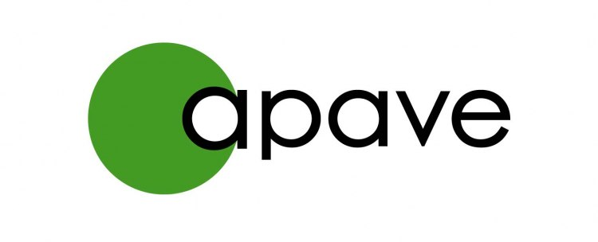 -
APAVE Alsacienne (Mulhouse - 68) :
Responsable de production
- Au sein de l'équipe Mainta, je suis responsable de l'ensemble de l'activité de production, depuis la commande jusqu'au suivi de la mise en exploitation des projets chez nos clients.
Je coordonne les activités transverses et j'encadre les intégrateurs et chefs de projets.
- Au sein de l'équipe Mainta, je suis responsable de l'ensemble de l'activité de production, depuis la commande jusqu'au suivi de la mise en exploitation des projets chez nos clients.
Je coordonne les activités transverses et j'encadre les intégrateurs et chefs de projets.
-
APAVE Alsacienne (Mulhouse - 68) :
- Juillet 2014 à Octobre 2015
-
SALM (Lièpvre - 68) :
Chef de projets SI
- Gestion des projets Internet de l'entreprise et des marques Cuisines Schmidt, Cuisinella et EMK.
- Redéfinition de l'écosystème Web transverse de l'entreprise.
- Avant-projets : analyse des besoins, appels d’offres
- Pilotage des projets Marketing, Qualité, Commerce, RH
- Coordination avec les intégrateurs et agences
-
SALM (Lièpvre - 68) :
- Janvier 2014 à avril 2014
-
-
Projet de reprise du service Web de RBS (20 salariés)
- Élaboration d'un dossier de création d'entreprise et reprise de l'activité avec Thierry Stiegler
- Création d'un réseau d'accompagnement :
Yves Lachat - expert comptable (SFA Obernai), Pascal Gaden - ADIRA, Me Créhange - Avocat, la Région Alsace, un parrain chef d'entreprise - Diagnostic de la reprise : étude du périmètre de la reprise
- Montage du plan de reprise : étude de marché, budgets prévisionnels et plan de trésorerie prévisionnelle sur 3 ans
- Recherche et obtention de financements (350k€)
- Recherche de locaux, négociation du bail
- Négociations avec l'Administrateur Judiciaire et présentation au Tribunal
-
Projet de reprise du service Web de RBS (20 salariés)
- Octobre 2011 à avril 2014
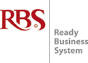 -
-
RBS (Entzheim - 67) :
Chef de projets E-Commerce
- Pilotage de marge, analyse de rentabilité
- Avant-vente, chiffrages
- Gestion d'une équipe pluridisciplinaire de 4 à 7 personnes
- Pilotage et planification de projets
- Animation de comités de pilotage, reporting
- Recueil et analyse des besoins, conception fonctionnelle, rédaction de livrables
- Refonte de processus métier et interfaçage avec différents systèmes d'information (SAP R/3, M3, Colombus...)
-
RBS (Entzheim - 67) :
- Octobre 2008 à septembre 2011
-
- Capgemini (Schiltigheim - 67) :
Consultant chef de projets SAP Enterprise portal
Pour Alcatel-Lucent (Illkirch-Graffenstaden - 67)- Gestion d'une équipe internationale de 4 personnes (Chine, France, Canada)
- Gestion de projets portails SAP Enterprise Portal (BI, KM, HR, SRM, MDM) et réseau de portails fédérés (SAP Federated Portal Network)
- Conception fonctionnelle, spécifications, documentation
- Animation de Comités de pilotage, reporting
- Pour Sidel (Groupe Tetra Laval, Octeville-sur-Mer - 76) : évolutions et maintenance portails SAP (KM, SRM, HR)
- Capgemini (Schiltigheim - 67) :
- Septembre 2005 à octobre 2008
-
- Actimage (Colmar - 68) : Développeur Web puis
Chef de projets junior
: appels d'offres nationaux, pilotage de projets et d'activité, modules PHP Copix, intégration XHTML, CSS, JS/AJAX - Consultant web mobile : prototypes techniques et fonctionnels, accompagnement client
- Actimage (Colmar - 68) : Développeur Web puis
CV de Julien LERCH - Chef de Projets imprimé depuis http://julien.lerch.free.frPage 1 / 3
Réalisations
Une séléction de projets menés à bien en tant que chef de projet.
Certains ne sont plus actuellement en ligne ou ont subi une refonte...
Pour des raisons de confidentialité les budgets sont mentionnés sous forme de fourchettes.
- NTN-SNR Roulements 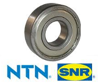
- 2013 - 2014
- Annecy (74)
- Environnement LAMP - RBS Change
- Application E-Business B2B
- Avant-vente, conception, gestion de projet, AMOA
- Budget : 400k€ +
- Skis Rossignol
- 2013
- Saint-Jean de Moirans (38)
- Environnement LAMP - RBS Change
- Application E-Business B2B & B2C
- Avant-vente, conception, gestion de projet, AMOA
- Budget : 200k€ - 300k€
- Phox 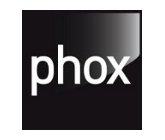
- 2012
- Aubervilliers (93)
- Environnement LAMP - RBS Change
- Site E-Commerce B2C
- Avant-vente, gestion de projet MOE
- Budget : 100k€ - 200k€
- Catimini 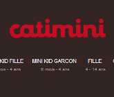
- 2012
- Environnement LAMP - RBS Change
- Site E-Commerce B2C
- Gestion de projet MOE
- Budget : 30k€ - 100k€
- Tartine & Chocolat 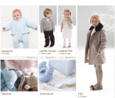
- 2012
- Environnement LAMP - RBS Change
- Site E-Commerce B2C
- Gestion de projet MOE
- Budget : 30k€ - 100k€
- Z-Enfant 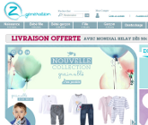
- 2012
- Environnement LAMP - RBS Change
- Site E-Commerce B2C
- Gestion de projet MOE
- Budget : 30k€ - 100k€
- Kidiliz 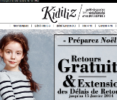
- 2012
- Environnement LAMP - RBS Change
- Site E-Commerce B2C
- Gestion de projet MOE
- Budget : 30k€ - 100k€
- Visites en Alsace 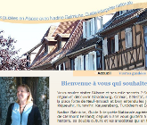
- 2011
- Colmar (68)
- Environnement LAMP - CodeIgniter
- Application CMS
- Raisin d'Or 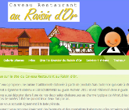
- 2011
- Zimmerbach (68)
- Environnement LAMP - CodeIgniter
- Application CMS
- Actimage 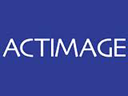
- 2008
- Strasbourg (67)
- Environnement Apache, PostgreSQL, PHP / Copix
- E-Alsace 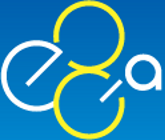
- 2008
- Strasbourg (67)
- Environnement Apache, PostgreSQL, PHP / Copix
- Prix des carburants 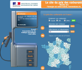
- 2007
- Paris (75)
- Environnement Apache, PostgreSQL, PHP / Copix
- IRSN
- 2007
- Paris (75)
- Environnement Apache, PostgreSQL, PHP / Copix
- Usine à sites / Générateur de sites thématiques
- ENA 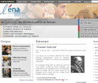
- 2006
- Strasbourg (67)
- Environnement Apache, PostgreSQL, PHP / Copix
CV de Julien LERCH - Chef de Projets imprimé depuis http://julien.lerch.free.frPage 2 / 3
Formation
- 2009
- Formations SAP JA100, JA300, JA310
- 2008
- Formations SAP EP100, EP300
- 2005
-
DESS
Caweb - Création Images et Multimédia Multilingue - Création
et
Administration de Sites Web (anglais, allemand)
Mention Bien - Major de promotion, Université Marc Bloch de Strasbourg (67) - 2004
-
Maîtrise en Langues étrangères Appliquées
Mention Assez bien, Université Marc Bloch de Strasbourg (67) - 2003
-
Licence en Langues étrangères Appliquées
Mention Assez bien, Université Marc Bloch de Strasbourg (67) - 2002
- DEUG en Langues étrangères Appliquées (LEA - anglais et allemand) Université Marc Bloch de Strasbourg (67)
- 2000
-
Baccalauréat Littéraire
Mention Bien, Lycée André Maurois de Bischwiller (67)
Compétences spécifiques
- Management
-
- Animation d'équipes, pilotage de projets (budgets, délais, qualité)
- Définition des besoins, études de risques
- Animation de comités de pilotage, reporting
- Rédaction de spécifications, documentation
- Méthodes agiles (SCRUM, Lean)
- Refonte de processus métier et interfaçage avec les différents systèmes d'information
- Avant-vente
-
- Soutenances clients et prospects
- Elaboration de dossiers de candidatures, démonstrations de solutions
- Appui commercial
- Langues étrangères
-
- Anglais (courant)
- Allemand (courant)
- Espagnol (courant)
- Outils
-
- Outils de modélisation et de mockups (Balsamiq, Visio, Pencil)
- Environnement de tests de validation fonctionnelle Behat
- Portails SAP Netweaver en mode simple et fédéré
- CMS Open-Source, CMS E-Commerce RBS Change, Prestashop
- IDE (éclipse, NetWeaver Developer Studio), éditeurs de texte (Notepad++, Geany), Dreamweaver
- Suites Open-Office, Microsoft Office et Project
- Langages
-
- programmation client : XHTML, XML/XSL, CSS, JS/AJAX, Actionscript
- programmation serveur : PHP orienté objet (frameworks Copix, Codeigniter), Java/JSP/Web Dynpro
- SGBD
- MySQL, PostgreSQL
Centres d'intérêt
- Bricolage
- Aménagements intérieurs et extérieurs
- Littérature
- Science fiction, thrillers, presse et ouvrages spécialisés
- Histoire
- En particulier Moyen-Âge et les XIXe et XXe siècles en Alsace
- Jeux vidéo
- Stratégie en temps réel, jeux de rôles